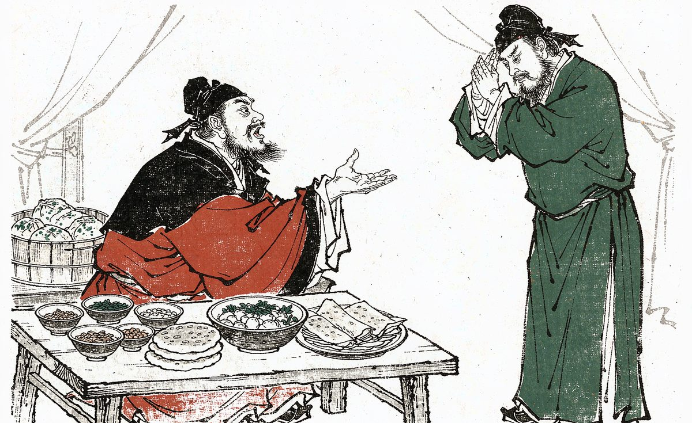
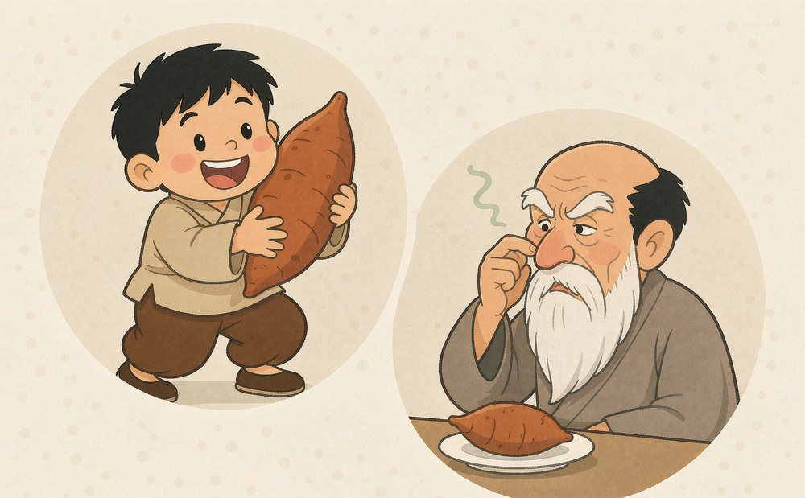

AP MICROECONOMICS · UNIT 2.5
Other elasticities
Income elasticity · Cross-price elasticity
CED 2.5 · MKT-3.E.9–E.11
Two more shifts of demand — two more elasticities.
Income ↑ → buyers want more of it. (A bigger house, a better phone.)
Income ↑ → buyers switch away from it. (Not “bad quality” — just “bought less as you get richer”.)
The catch: you cannot tell which one a good is from its name or its price. Only one thing settles it — the observed direction of the change, i.e. the sign of YED.

在许都我待你哪点儿不好？
顿顿饭四个碟儿两个火烧，
绿豆面拌疙瘩你嫌俗套……
生熯煎饼调榛椒香油来拌，
还给你包了些马齿菜包，
芝麻叶杂面条顿顿都有。
In Xudu, what have I ever done badly by you?
Every meal: four dishes and two baked rolls —
millet-noodle dumplings you call too plain…
fresh-fried pancakes dressed with hazel-pepper oil,
and purslane buns wrapped up for you as well,
sesame-leaf noodles, at every single meal.
Source: traditional Henan opera 《关公辞曹》.
听说那老包要出京，
忙坏了东宫和西宫。
东宫娘娘烙大饼，
西宫娘娘剥大葱。
They say old Bao is leaving the capital —
it throws the East and West Palaces into a flurry.
The East Palace lady bakes great flatbreads,
the West Palace lady peels spring onions.
普通人的正常品可能是富人的劣等品 — what is normal for ordinary people may be inferior for the rich.
Source: Shandong Élü opera 《下陈州》.
Income is the denominator — the thing that moved.
Economists use YED to decide whether a good is normal or inferior — and firms use it to forecast what a boom or a slump will do to their sales.
Inferior does not mean “poor quality”. It means: when buyers get richer, they buy less of it.
“Income up 10% → demand up 25%” is a normal good with YED = +2.5.
Richer buyers want more. The bigger the number, the more the good rides on income (a luxury swings hardest).
Richer buyers want less — they trade up. Bus rides, instant noodles, cheap own-brand lines.
Demand does not react to income at all.
Buyer 1 — a poor household. Income +10% → buys +20% of this good. YED = 20 ÷ 10 = +2.0 → normal.
Buyer 2 — a rich household. Income +10% → buys −5% of the same good. YED = −5 ÷ 10 = −0.5 → inferior.
Remember it this way: the “treat” and the “plain food” are the same good seen from two kitchens (both source pages tell the same story). Ask whose income moved, then let the sign of YED decide.
Low income: income +10% → flour +8% → YED = +0.8 → normal.
Middle income: the turning point → YED = 0.
High income: income +10% → flour −20% → YED = −2.0 → inferior.

孙子爱吃红薯，爷爷看了红薯就想吐 — the same sweet potato is normal for the boy and inferior for the grandfather: income is never the same person’s.
1 · Restaurant meals — Qd +25% when income +10%: YED = 25 ÷ 10 = +2.5
2 · Read it — positive → a normal good, and a strong one: meals out swing much harder than income does.
3 · Instant noodles — Qd −5% when income +10%: YED = −5 ÷ 10 = −0.5
4 · Read it — negative → an inferior good: buyers trade away from noodles as they get richer.
One number, two jobs: the sign names the good; the size says how hard it swings.
Price ↑ → quantity demanded ↑. On the diagram the demand curve slopes up — the opposite of every other demand curve in Unit 2.
A 19th-century Scottish statistician. He observed that a rise in the price of bread did not cut what poor households bought — they bought more.
Ireland, 1845. The potato blight doubled the price of the one food a poor family lived on — and the poorest families ate more potatoes, not fewer.
① Substitution effect. The price is up, so the good is dearer relative to everything else → buyers switch away → quantity falls.
② Income effect. This staple is most of a poor household’s budget. Its price ↑ → real income collapses → meat and butter are out of reach → they fall back on the cheap staple → quantity rises.
③ Which wins? The income effect — it is bigger than the substitution effect. Net: price ↑ → quantity ↑.
Two conditions: the good must be inferior and take a large share of a poor household’s budget.
Substitution effect → Qd ↓
Income effect → Qd ↑↑
Net → price ↑, quantity ↑
Two goods in one number: numerator A, denominator B. Same number, second name: CPED.
B’s price up → demand for A up: buyers switch across. Butter up → margarine up.
B’s price up → demand for A down: they are bought together. Machines up → pods down.
B’s price moves, demand for A does not.
XED is also written CPED — cross-price elasticity of demand. Same number, two names.
| Case | %Δ price of B | %Δ quantity of A | XED |
|---|---|---|---|
| Case 1 | −8% | +12% | −1.5 |
| Case 2 | −8% | −6% | +0.75 |
Case 1: B’s price falls and A’s quantity rises → bought together → XED negative → complements.
Case 2: B’s price falls and A’s quantity falls → buyers switch across → XED positive → substitutes.
Same data, opposite stories. Nothing in the two products tells you which case you are in — only observed quantities and prices do.
Method: write the fraction, divide, then read the sign: + → substitutes · − → complements · 0 → unrelated. The size tells you how tight the link is.
The exam habit: facts and data, not intuition. Labels are earned, not guessed.
1 · Butter up 10% → margarine +12% — XED = 12 ÷ 10 = +1.2
2 · Read it — positive: dearer butter pushes buyers across → butter and margarine are substitutes.
3 · Coffee machines down 20% → pods +30% — XED = 30 ÷ (−20) = −1.5
4 · Read it — negative: cheaper machines pull pods along → machines and pods are complements.
The sign is the relationship. Same direction = substitutes; opposite directions = complements.
| Elasticity | Denominator | Sign meaning | Size meaning |
|---|---|---|---|
| PED | % Δ own price | always — (law of demand) | elastic vs inelastic |
| PES | % Δ own price | always + (law of supply) | elastic vs inelastic |
| YED | % Δ income | + normal · – inferior | how hard it swings |
| XED | % Δ price of B | + substitutes · – complements | how tight the link |
Exam habit: “Calculate” — write the fraction, then the number, then the label. The label earns the point.
1 · Big idea — elasticity can be measured for any ______ of demand or supply, not just price.
2 · The frame — elasticity = ______ ÷ % change in the determinant.
3 · YED — %ΔQd ÷ %Δ ______.
4 · YED sign — positive → ______, negative → ______.
5 · Giffen good — a special inferior good: price ↑ → quantity demanded ______, because the ______ is bigger than the substitution effect.
6 · XED (= CPED) — %ΔQd of A ÷ %Δ ______.
7 · XED sign — positive → ______, negative → ______, zero → unrelated.